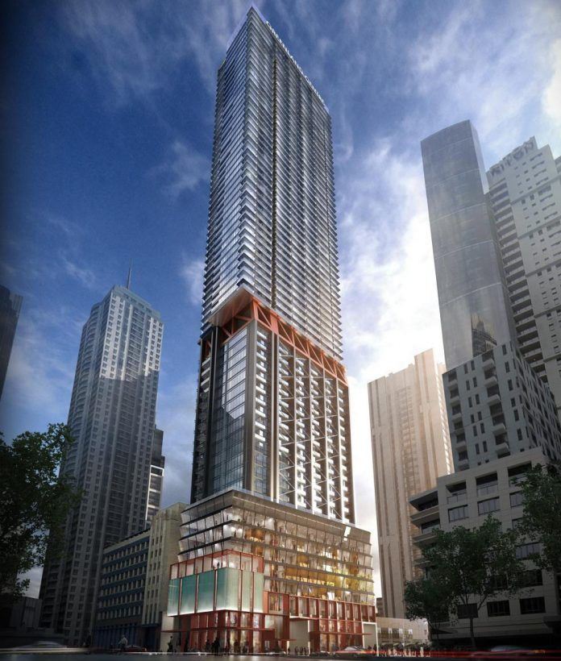
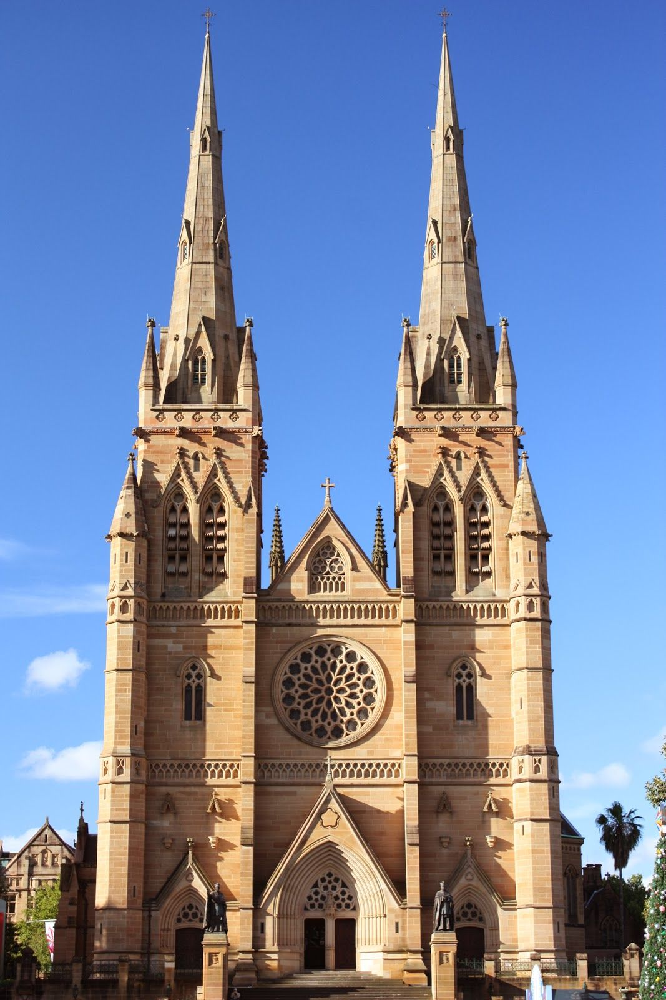
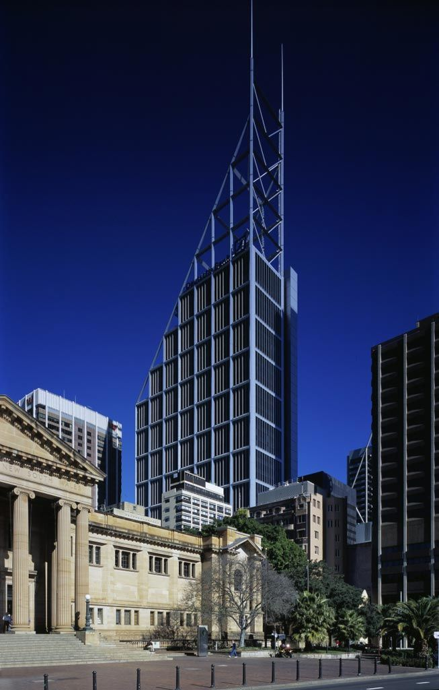

Sydney photos
The World Tower
The World Tower is a residential skyscraper in Sydney, Australia. Designed by Fender Katsalidis, it stands at a height of 230 m (750 ft), making it the second tallest residential building in the city, surpassed by Greenland Centre. Construction began in 2001 and was completed in 2004. Developed by Meriton, The World Tower was the 2004 Bronze recipient of the Emporis Skyscraper Award, and was briefly Australia's tallest residential building from 2004 to 2006. The World Tower consists of 75 above-ground levels, 10 basement levels, 15 lifts and 701 residential units. Each of the three residential sections of the building has a pool, spa, sauna, gymnasium, games room, and a private 24-seat theatrette. The pool and spa areas on levels 38 and 61 offer 180° views of Sydney. There is also a childcare centre located in the building.

The Greenland Centre
The Greenland Centre is a residential skyscraper in Sydney, New South Wales, Australia, located on the corner of Bathurst and Pitt Street. At a height of 237 m (778 ft), it is the tallest residential building in Sydney. The project was developed by Greenland Group and was designed by BVN and Woods Bagot. The initial stages of the project involved the gutting and conversion of the Sydney Water office tower, before progressing to the construction of further storeys on top, resulting in a residential tower with 470 apartments and six penthouses across 67 levels.

St Mary's Cathedral
The Cathedral Church and Minor Basilica of the Immaculate Mother of God, Help of Christians (colloquially, St Mary's Cathedral) is the cathedral church of the Roman Catholic Archdiocese of Sydney and the seat of the Archbishop of Sydney, currently Anthony Fisher OP. It is dedicated to the "Immaculate Mother of God, Help of Christians", Patroness of Australia and holds the title and dignity of a minor basilica, bestowed upon it by Pope Pius XI on 4 August 1932.

Deutsche Bank Place
Deutsche Bank Place is a 240 meter high skyscraper in Sydney, New South Wales, Australia. It is located at 126 Phillip Street in the northeastern end of the central business district, across the street from Chifley Tower. Construction began in 2002 and was completed in 2005.

Chifley Tower
Chifley Tower is a skyscraper in Sydney, Australia. It was designed by New York City-based architects[1] Travis McEwen and Kohn Pedersen Fox, with John Rayner as project architect. At a height of 244 metres (801 feet), Chifley Tower was the tallest building in Sydney from 1992 to 2019, before being surpassed by the 271 metre (890 feet) tall Crown Sydney in early 2020.

Opera House
The facility features a modern expressionist design, with a series of large precast concrete "shells", each composed of sections of a sphere of 75.2 metres (246 ft 8.6 in) radius, forming the roofs of the structure, set on a monumental podium. The building covers 1.8 hectares (4.4 acres) of land and is 183 m (600 ft) long and 120 m (394 ft) wide at its widest point. It is supported on 588 concrete piers sunk as much as 25 m (82 ft) below sea level. The highest roof point is 67 metres above sea-level which is the same height as that of a 22-storey building. The roof is made of 2,194 pre-cast concrete sections, which weigh up to 15 tonnes each.